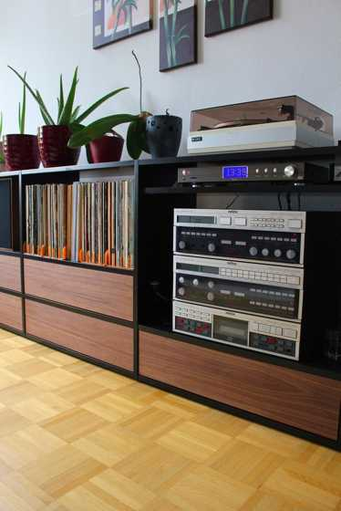
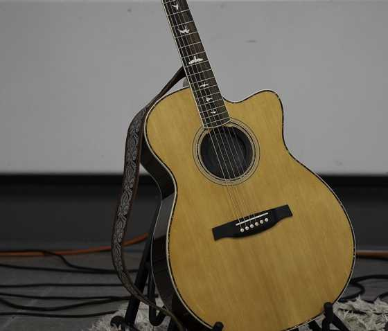
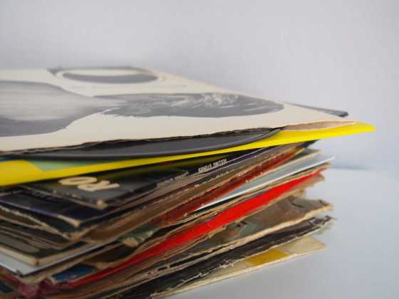
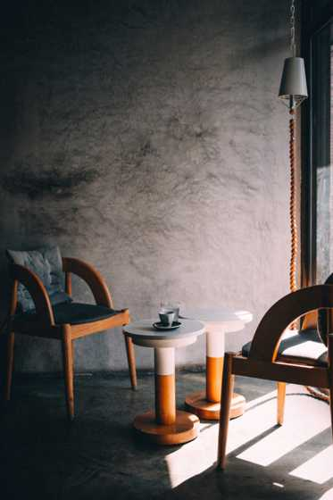
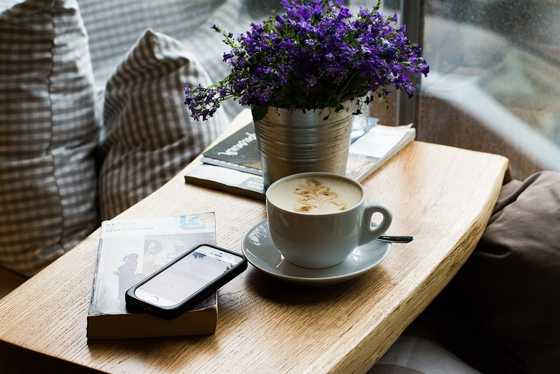
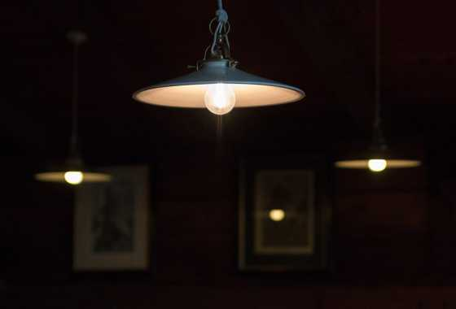
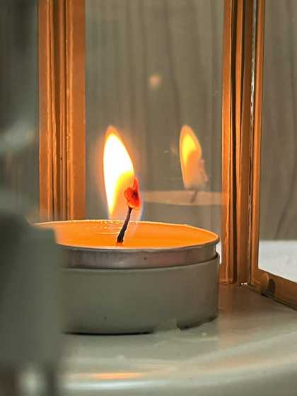
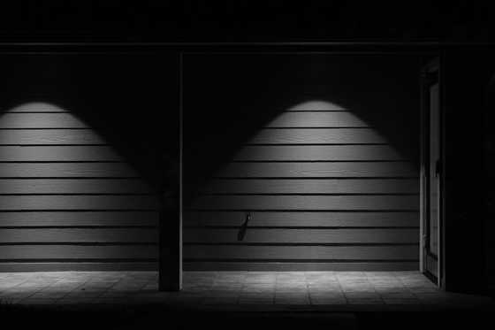
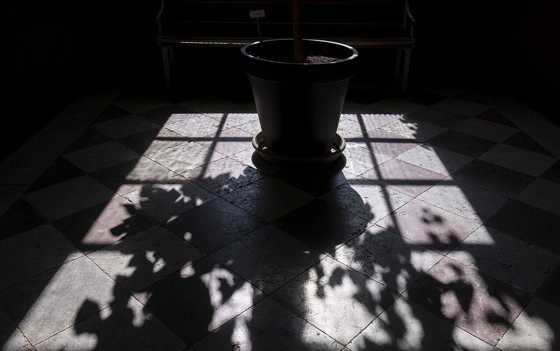

Café NooR
銀天街の路地で、レコードの音と手づくりのタコスが迎える、コザの小さな秘密基地。
ABOUT
音楽と、近所の人のための味。
紹介記事によると、Café NooRは2017年、沖縄市照屋のコザ銀天街にオープンしたカフェです。店主はラッパーとしても活動するST-LOWさんで、銀天街の近くで育ったそうです。
外観はカラフルなグラフィティで彩られ、店内には漫画やフィギュアが並び、DJ機材も置かれた「秘密基地」のような空間と紹介されています。レコードでBGMを流し、近所の子どもたちが描いたイラストを飾っているとも伝えられています。
お料理は、「この辺はおじいちゃん、おばあちゃんも多いので、誰でも食べやすい味にしています」という店主の言葉どおり、年代を問わず食べやすい味を目指しているとのことです。

情報源: 琉球新報(銀天街の秘密基地で味わう男メシ) / イザ☆コザ / ごぎゃんネット / コザウェブ / Instagram
「NooR」という店名の意味は確認できていないため、ここでは触れていません。上記の事実以外の言い回しは制作側の表現です。
MOOD
灯り、音、コーヒーの湯気。
写真はお店の雰囲気を想像していただくためのフリー素材で、実際の店内や商品ではありません。










VOICE
お客様の声(イメージ例)
以下は制作側が作成したイメージ例で、実在のお客様の声ではありません。
商店街の中にあるのに、入ると音楽が流れていて、ちょっと別の場所に来たような気分になれました。
ご来店のお客様(イメージ)パリッともちっとしたタコスがおいしくて、気づけばあっという間に食べ終わっていました。
ご来店のお客様(イメージ)店内の小物を眺めているだけで楽しい時間でした。また寄りたいと思います。
ご来店のお客様(イメージ)ACCESS
コザ銀天街の中で。
| 所在地 | 〒904-0011 沖縄県沖縄市照屋1丁目14-16 1F(コザ銀天街内) |
|---|---|
| 電話 | 準備中 |
| 営業時間 | 準備中 |
| 駐車場 | 記事では専用駐車場はなく、近隣のコインパーキングを利用とされています |
| SNS | Instagram @cafenoor098 |
営業日・時間は不定のため、お出かけ前にInstagramをご確認ください。